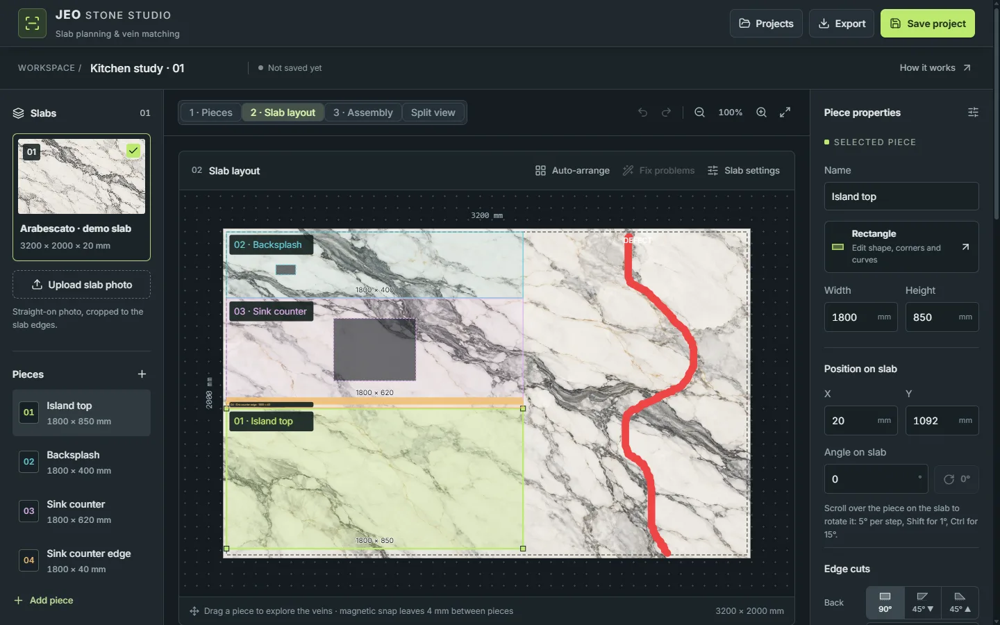
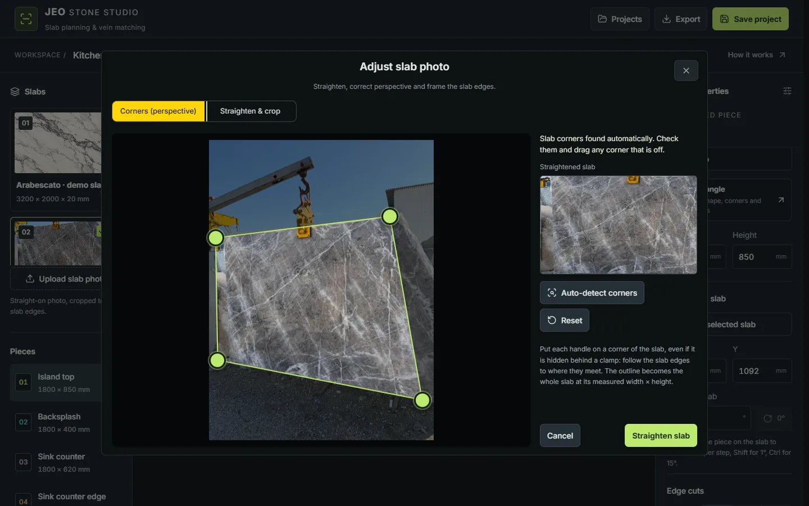
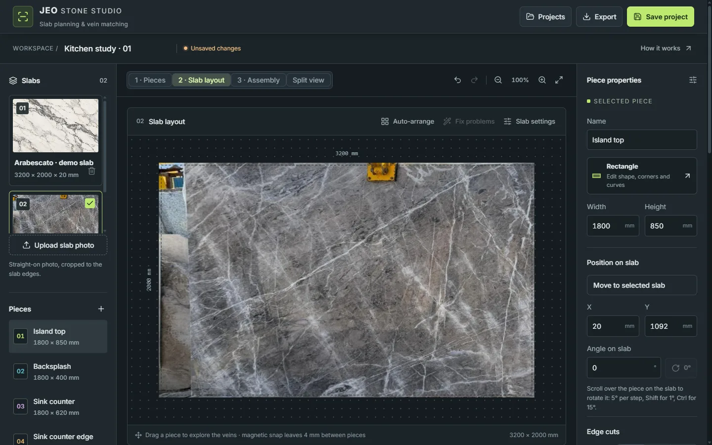
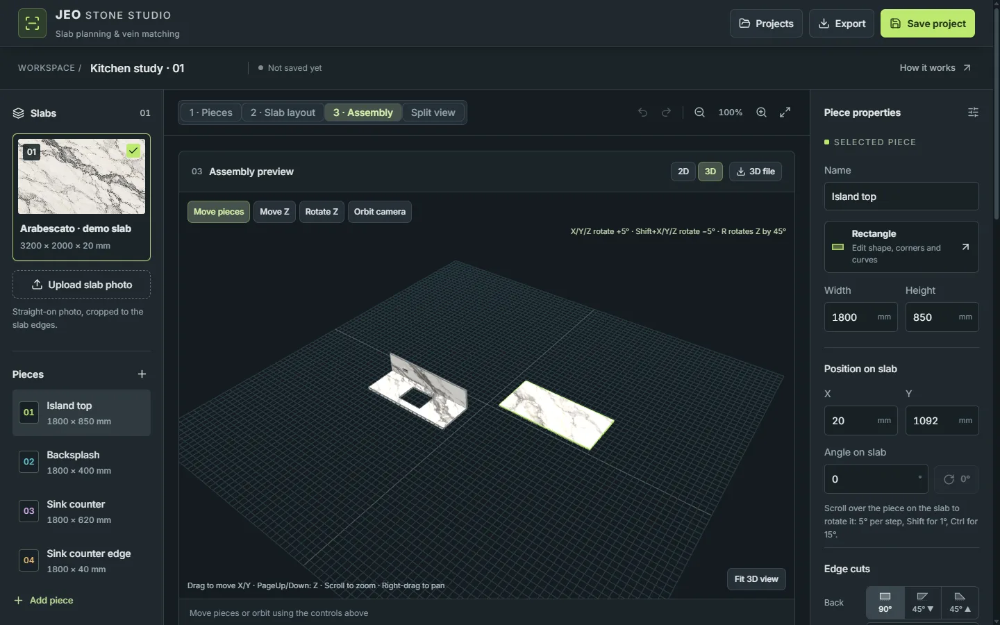
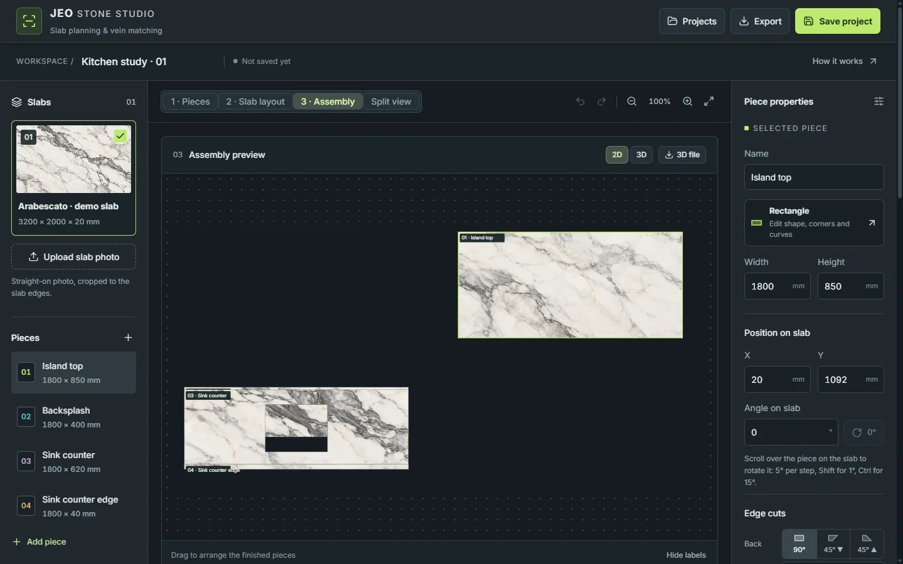
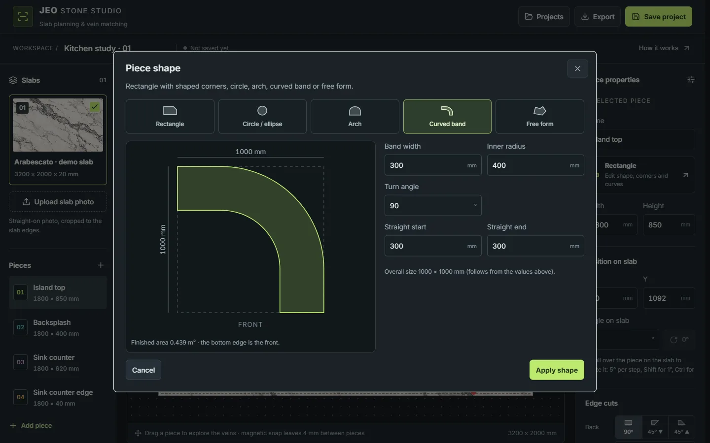
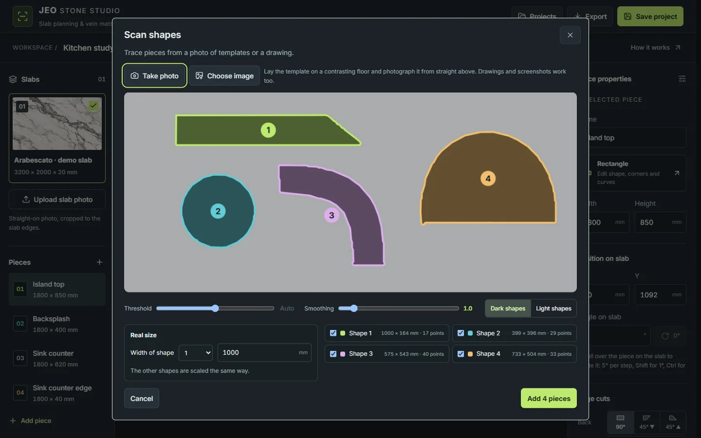
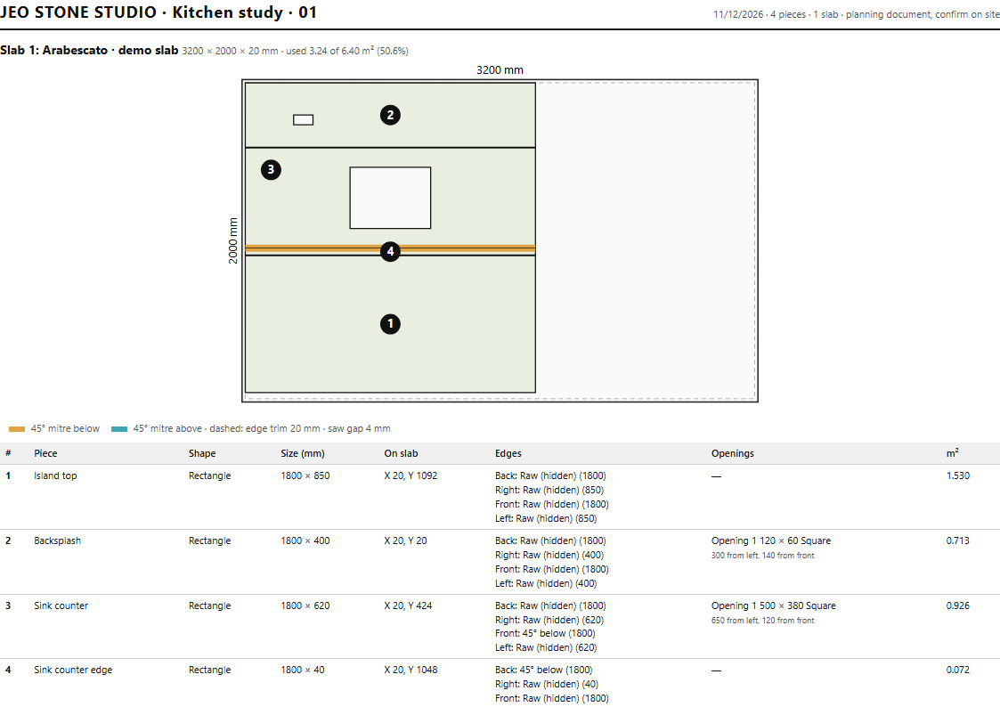
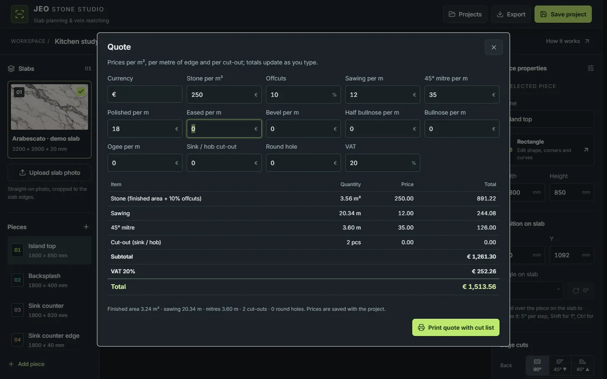

Photo straightening
Automatic corner detection and perspective correction, or straighten and crop by hand.
Slab planning for stone fabricators
Jeo Stone Studio turns a phone photo of a slab into a true-to-scale layout. Place every countertop, sink and apron on the real stone, match the veins across the joints, check the saw gap — and hand the workshop a cut list, a DXF and a price before the first cut.
Windows 10 / 11 · macOS · works offline · your slab photos stay on your computer


How it works
Any phone photo, even taken at an angle. The four slab corners are found automatically and the photo is straightened to the slab's measured width and height.
Countertops, backsplashes, aprons and tables: rectangles, circles, arches, curved bands, free forms or scanned templates — with sinks, tap holes, hobs, 45° mitres and edge finishes.
Drag pieces over the stone to follow the veins, turn them with the mouse wheel, or let Auto-arrange pack them. Overlaps, slab edges and defects are checked as you go.
Print the cut list or save it as PDF, export a DXF for the CNC or bridge saw, give the client a quote and a 3D view of the finished surface.
See it before you install it

Drag any corner that is hidden behind a clamp; a magnifier helps you place it exactly. The straightened photo becomes the slab, measured in millimetres.
Pieces sit on the real stone. Paint defects and the checks keep every piece clear of them, of the slab edge and of each other — always leaving the saw gap.


See how the veins run across the finished kitchen before cutting. Download the model as a 3D file, or open it in AR on an iPhone or iPad to show the client.


Rounded and chamfered corners (with an angle or 45° in one click), circles, arches, curved bands and free forms. Photograph cardboard templates and every shape becomes a piece.


One click gives the workshop every size, position, edge and opening, and the saw a DXF in millimetres. The quote is calculated from the real stone area, sawing length, mitres, edges and cut-outs.
Everything in the studio
Automatic corner detection and perspective correction, or straighten and crop by hand.
Move and rotate pieces over the photo to any angle; the assembly shows how the veins meet.
Corners with radius or chamfer, circles, arches, curved bands, L-shapes and free forms.
Trace shapes from a photo of templates or a drawing and add them as pieces in one go.
Sinks, tap holes and hobs — square, rounded or round — placed by their distance from the edges.
45° mitre below or above on each side, and finishes from polished to bullnose and ogee.
Overlaps, the saw gap, the slab edge and painted defects are checked on the real outlines.
Packs pieces onto the slabs to save stone, or fixes only the pieces with problems.
A textured 3D preview, downloadable for Windows 3D Viewer, Blender, SketchUp or iPhone AR.
Per-slab drawings and tables for the workshop, and a millimetre DXF for CNC and bridge saws.
Your prices per m², per metre of sawing, mitre and edge, and per cut-out — with VAT.
Work offline on Windows or Mac and share projects with your team's online studio.
Mirror a slab's photo to plan book-matched walls and floors.
Project backups carry their slab photos and open on any computer.
The desktop app keeps everything on your computer; the online studio is protected by a team password.
Download
Click More info, then Run anyway. The message appears for new programs until they are signed; your projects are not affected.
Right-click (or Control-click) the app in Applications and choose Open, then Open again. You only need to do this the first time.
Download the studio and try it on your own slabs. For licences, an online studio for your team, or a guided setup in your workshop, get in touch.
Questions
No. The desktop app works fully offline and keeps projects and slab photos on your computer. The internet is only needed if you sync with an online studio.
A normal phone photo showing the whole slab. It does not have to be taken straight on: the corners are found automatically and the photo is straightened. A contrasting background (sky, ground, wall) helps. Then enter the slab's measured width, height and thickness.
It is a planning studio. It exports a DXF in millimetres and printable cut lists for your CNC, bridge saw or operator. Always confirm measurements on site before cutting.
Cut list as PDF, DXF for CAD and saws, 3D models as GLB (Windows, Blender, SketchUp) and USDZ (iPhone and iPad AR), an SVG of the assembly, and project backups that include the slab photos.
Yes. An online studio protected by a team password can be shared by the office, and the desktop app uploads and downloads projects with their photos.
The online studio works in the browser on phones and tablets, with large touch controls for placing pieces in the assembly. The desktop app runs on Windows and Mac.
Millimetres throughout, with areas in square metres.
Contact
Questions about the studio, a licence for your workshop, or help with a tricky slab — send us a message.